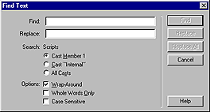

Using Director > Writing Scripts with Lingo > Creating and attaching scripts with the Script window > Finding handlers and text in scripts
Using Director > Writing Scripts with Lingo > Creating and attaching scripts with the Script window > Finding handlers and text in scripts |
Finding handlers and text in scripts
The Find command in the Edit menu is useful for finding handlers and for finding and editing text and handlers.
To find handlers in scripts:
1 |
Choose Edit > Find > Handler. |
The Find Handler dialog box appears. |
|
The leftmost column in the Find Handler dialog box displays the name of each handler in the movie. The middle column displays the number of the cast member associated with the handler's script. The rightmost column lists the cast that the cast member is in. |
|
2 |
Select the handler that you want to find. |
3 |
Click Find. |
The handler appears in the Script window. |
|
The title bar at the top of the Script window indicates the script's type. |
|
To find text in scripts:
1 |
Make the Script window active. |
2 |
Choose Edit > Find > Text. |
The Find Text dialog box appears.
 |
|
3 |
Enter text that you want to find in the Find field, and then click Find. |
Find is not case sensitive: |
|
To specify which cast members to search:
Select the appropriate option under Search: Scripts.
To start the search over from the beginning after the search reaches the end:
Select the Wrap-Around option.
To search only for whole words and not fragments of other words that match the word:
Select the Whole Words Only option.
To find the next occurrence of the text specified in the Find field:
Choose Edit > Find Again.
To find occurrences of selected text:
1 |
Select the text. |
2 |
Choose Edit > Find > Selection. |